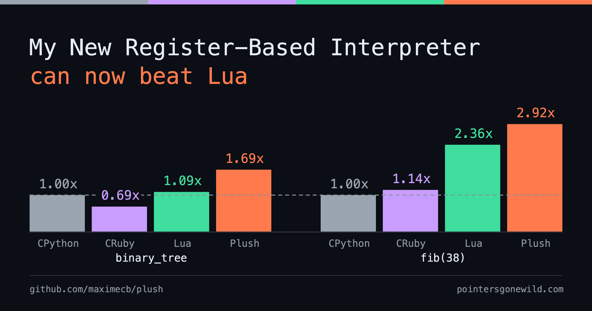
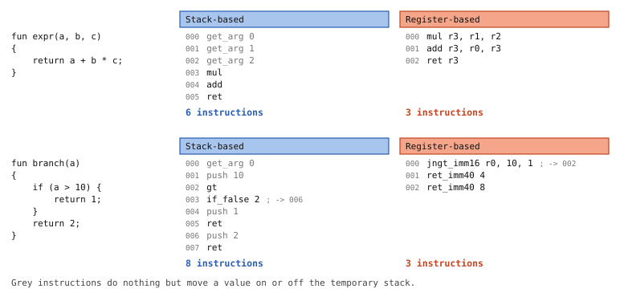
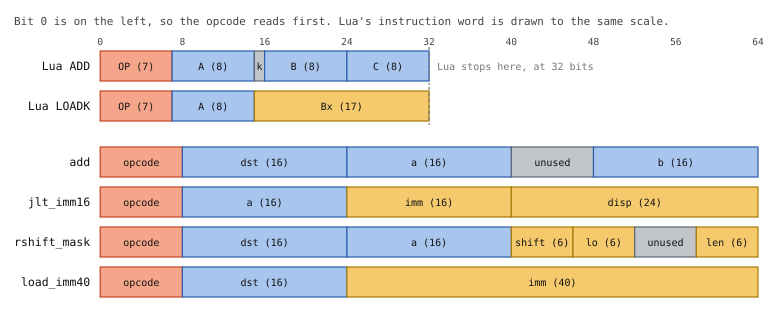
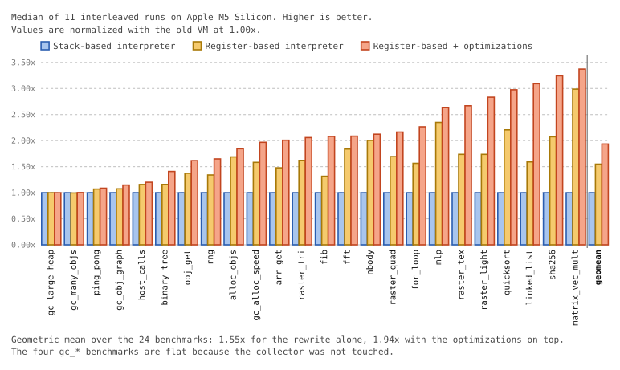
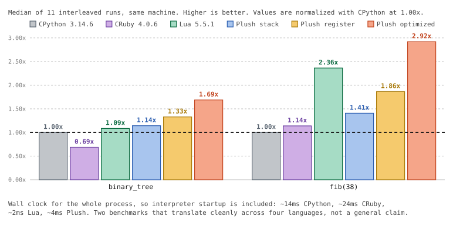

Plush's New Register-Based Interpreter Is Insanely Fast

This is the seventh blog post in a series about my work in building the Plush programming language and speeding up its interpreter and virtual machine. The previous post went over an updated value representation, which both cut down memory usage, and improved performance on every benchmark. I'll go into some detail on how the interpreter was rewritten to switch from a stack-based design like CPython, to a register-based design like Lua, and optimized to deliver some surprising, and I think pretty impressive results. One thing I'll say right away is that if you care about interpreter performance, you probably should not be writing stack-based bytecode interpreters in 2026.
Plush is implemented in Rust, and previously, I had an instruction enum with some variants specifying operands and others not. Unfortunately, because some instructions needed multiple parameters for things like inline caching, the size of the Insn enum was 24 bytes, which is quite large considering that most instructions needed no parameters and the opcode portion of the instruction (the kind of instruction) would have easily fit in just one byte. What makes the old interpreter slow, however, isn't so much the size of each instruction. One of the main sources of overhead in an interpreter is dispatch overhead. That is, the time the CPU needs to go from one interpreter instruction to the next. This is largely because the CPU has a hard time predicting where execution will go after each interpreter instruction. This can result in branch mispredictions which cause CPU pipeline stalls, essentially the CPU sitting idle for many cycles.
The unfortunate thing about stack-based interpreters is that stack-based bytecode has a tendency to need a lot more instructions to do the same work as a register-based interpreter. You end up with some slots in your stack frame for local variables, but then you need to shuffle values between those local slots and a temporary stack where you do the actual computations. In contrast, a register-based interpreter has an infinite number of register slots (essentially local variables), and it simply operates on the values in registers directly. It doesn't need extra instructions to shuffle values between locals and temporaries, or to manipulate a temporary stack, and so this tends to use many fewer instructions, which makes for a faster interpreter. Simple, right? So why isn't every interpreter a register-based interpreter? It's slightly more effort to compile to register-based bytecode, but it's really not that hard. I think part of the reason is maybe that there's a certain elegance (or maybe even cuteness) to the stack-based paradigm, and almost every CS curriculum will teach you about stacks. CPython and CRuby both use stack-based interpreters, and that is part of the reason why their interpreters are relatively slow.
{kind=link}

Lua has one of the most well-known register-based interpreters, and this interpreter has a reputation for being fast, so when designing Plush's new interpreter, I took some inspiration from the Lua and LuaJIT bytecode instructions. Both use one 32-bit word, and encode up to three 8-bit operand fields per instruction, which can be registers, small immediates or constant table indices. In Lua 5.5.1, that 8-bit field width limits the frame size to 255 registers, and the number of named local variables to 200. That's enough for pretty much any reasonable human-written code, but not always when it comes to code generated by tools, or if you have a compiler that does function inlining. I didn't want to have that restriction in Plush, so I went for a luxurious 64-bit instruction word, which makes it easy to support 64K locals and encode larger immediate values. The larger instruction word also makes it easy for Plush to encode its instructions in 3-address form e.g. reg(a) = reg(b) + reg(c), as opposed to reg(a) += reg(b). This is a format that is used by Lua, ARM machine instructions, and also widely used in compiler textbooks because it makes optimizations easier, since it avoids destructive updates.
{kind=link}

The old Insn enum from before the refactoring can be seen in src/vm.rs@4637315f. The new encoding, found in src/insns.rs@216fd26 uses a macro def_opcodes! to specify how each bit in the instruction word for each possible opcode is mapped to different values in a way that's compact and human-readable. The macro is designed to be self-documenting. It uses its inputs to generate methods to encode each instruction with the right parameters into an Insn newtype wrapping a u64, and methods to decode them into structs with named fields. I validated that the Rust compiler is able to elide the structs, meaning we get the extra readability benefit at zero cost. The idea for the macro and its format was mine, but I did have plenty of mechanical help. Claude Code is a wizard when it comes to Rust macros.
At the time of this writing there are 76 opcodes. Many of those are specialized instructions which I'll discuss a bit more later. These include fused compare-and-branch instructions like Lua. This means we have instructions like "jump if less than", instead of separating the comparison and the jump into two instructions. This can potentially make very common branching instructions nearly twice as fast. Some of the instructions refer to side-tables for things like inline caches, because there would be too much data to encode in only 64 bits. The alternative would have been to allow some instructions to use two instruction words. I'm pretty happy with this refactoring because the part of the code that translates the AST into bytecode actually looks much cleaner with specialized constructors generated for every instruction. As you'll soon see, this interpreter is also much faster than the old one. I expected something like a 20% or 30% boost, but was genuinely surprised by the results I got.
Performance Improvements
The results below were gathered on my MacBook Air M5 (arm64, 10 cores), with rustc 1.96.0. 11 interleaved runs were timed and the median was used to reduce the impact of thermal noise. The results were also replicated a second time and found to be stable. The three different configurations compared are the old stack-based bytecode VM right before the rewrite (4637315f), the register-based interpreter before any additional optimizations (9f72f77d), and a new version of the register-based interpreter with multiple optimizations discussed later in this post (07d38782). The benchmarks used are from 07d38782. Some new benchmarks were added to measure and optimize the speed of software 3D rendering with texturing.
{kind=link}

The first thing to notice is that the two GC benchmarks on the left are completely flat because they are designed to measure collection speed. This is to be expected since optimizing the interpreter doesn't make the GC itself run faster, and it helps to validate our methodology. The ping_pong benchmark is made to measure the speed at which two actors can exchange a message back and forth, and it gets relatively little speedup. Beyond that, we see large speedups pretty much across the board, with the median being 2.07x, and the maximum speedup being 3.37x. The unoptimized register-based interpreter gave us a 1.55x geometric mean speedup compared to the old interpreter, and the additional optimizations give us a 25% boost on top of that, for a geometric mean total speedup of 1.94x.
Additional Interpreter Optimizations
One thing that you may have noticed in the previous section is that numerical and loop-heavy benchmarks benefit the most. This is in part because function calls are relatively expensive, but it's also because I gave those benchmarks special attention, and added optimized fused instructions to make loops and bitwise operations faster. This is because one of my goals has been to make Plush fast enough to do software rendering with texturing. I showed in the last post how I created a simple 3D game with flat-shaded polygons which ran pretty fast, but this game was fast specifically because the polygons are flat-shaded, and rows of pixels can be filled with a primitive similar to memcpy, meaning that there is no per-pixel work to be done for the interpreter. I had Claude create raster_tex and raster_light benchmarks which have optimized loops to render textured polygons, as well as textured and lit polygons, both of which require the interpreter to compute color values for each pixel. Then I added a Function.dump_bytecode() method to inspect the generated bytecode and optimize it.
In addition to loop and bitwise optimizations, I also optimized host function calls needed to manipulate the byte array used by the frame buffer. I'm happy to report that Plush is now fast enough to run a game with Quake or Quake 2 level graphics using its interpreter, at interactive frame rates at a resolution around 800x600. These optimizations have also translated to many other loop-heavy benchmarks. The sha256 and quicksort benchmarks, for example, have gotten much faster even though I paid them no particular attention.
The commits below are the optimizations I added:
-
ae761a2Fused compare and branch. The stack VM pushed a boolean fromlt/le/eqand then consumed it withif_true/if_false. The fused instructions take two registers and a displacement, so the boolean is never materialized. -
c474db4Compare against an immediate.jlt_imm16and friends compare a register against a 16-bit literal. -
391546bShift by immediate.lshift_immandrshift_immcarry a 6-bit shift count in the instruction instead of reading it out of a register. -
9de3f57Bitwise AND with a mask.bit_and_maskencodes the mask as a run of1bits, making it possible to combine a bitwiseANDwith a mask of a contiguous set of bits. -
ac7d04brshift_mask. Folds the shift-then-mask combo into a single instruction. This is a pattern commonly used when extracting bit fields, e.g.(val >> 8) & 0xFF. -
7fc9ad2Widen immediates to 40 bits.load_imm40andret_imm40carry 40 bits, which makes it possible to load 32-bit unsigned values into a register with a single instruction. -
e60291dBake global constants into bytecode. A global constant whose value is known at compile time can be directly encoded into an instruction's immediate field. -
8445e35Deduplicate constants. Identical non-heap constants share one pool slot, keyed by their bits, which keeps the pool dense for both the collector and the cache. -
6913eedRemove redundant instructions in while loops. Awhileloop has no init or increment clause, unlike aforloop, and codegen stopped emitting anything for the omitted clauses. -
827c9e3Better loop and if/else branch layout. Arranges the branches of a loop or conditional so the common path falls through instead of jumping. -
c79d55bEliminate moves for call operands. A call's frame is started directly at the register its result has to end up in, so a nested call returns straight into place instead of being copied down. -
14301ddZero-fill stack frames. We have to initialize local registers to avoid leaving stale values for the GC. Filling withFIXNUM_ZERO(all zero bits) is faster than filling with theNILvalue. -
25927eaFaster host calls. Split the arity check out of the hot path.
To squeeze out performance, I had to use unsafe in a few strategic places. I also audited the code to replace many asserts with debug-only asserts. I did leave overflow checks enabled in release for security reasons, though. The main takeaway from the list above is that, again, in an interpreter, the biggest lever is reducing the instruction count. A register-based interpreter design is better for that. When writing an interpreter, you also have the luxury of being able to design your own custom instruction set, which is worth putting some time into.
It's possible to go pretty far with custom instructions. You can create large instructions that represent common patterns and do the work of several instructions. In addition to reducing interpreter dispatch overhead, this gives the host compiler (i.e. rustc here) a bigger chunk of code to optimize together, meaning it can potentially eliminate redundancies. The risk there is that at some point you can end up with large and complex instructions that would be hard for a JIT to compile (assuming you wanted to compile from bytecode). Some interpreter optimizations, like instructions that contain tons of branches and function calls, can get in the way of a JIT. The combined instructions I previously described are fairly small units and would easily translate, and even help a simple JIT.
Plush vs Python, Ruby and Lua
The graph below is a comparison on two benchmarks of the performance of the old Plush interpreter, the register-based interpreter without optimizations, and the optimized interpreter against CPython 3.14.6, CRuby 4.0.6 (interpreter-only) and Lua 5.5.1. This is again done with 11 interleaved runs, with the median result taken. The benchmarks are found in commit e83f5515.
{kind=link}

It's not quite fair to compare Plush against other languages, because there's a question of what you're measuring and what you're not. Here I'm only measuring two benchmarks. The big asterisk is that there are definitely benchmarks where Ruby, Python and Lua would outperform Plush. In particular, Plush has immutable strings and it currently does nothing to optimize string concatenation. It also uses a naive stop-the-world copying GC, whereas Ruby for example uses a generational GC with lazy sweeping. So Plush would probably perform worse on string and GC-oriented benchmarks. I also made no attempt to optimize dictionaries in Plush. Marco Concetto Rudilosso and I implemented a hash map with linear probing, but that could have pathological edge cases at larger sizes.
The fib and binary_tree benchmarks are also small synthetic benchmarks that focus fairly heavily on function calls. All of that being said, from what we saw earlier, these benchmarks are middle of the pack when it comes to the speedups we got with the new Plush interpreter, I did not pick loop-heavy numerical benchmarks where Plush got the highest speedup. On these two benchmarks, Plush gets the best performance. Lua is generally faster than CPython and CRuby, but Plush comes out ahead of Lua on both, by 24% on fib and 55% on binary_tree. If you are wondering, I did compare the performance on sha256 afterwards, and although I won't quote the results here because Plush has special bitwise arithmetic optimizations which make that comparison particularly unfair, the ranking is the same, with Python being the slowest by a long shot, followed by CRuby, then Lua, then Plush.
The Plush language has simpler semantics than Python, Lua and Ruby. It's less dynamic in some important ways. Global functions and global variables are immutable by default, which allows the bytecode compiler to statically determine many call targets and to fold some global constants into immediates. In contrast, CRuby has made the dubious choice of allowing people to redefine the meaning of the + operator on integers, and CPython has made the even more dubious decision that every integer is a heap-allocated object, with no tagged representation for small integers. Language design decisions like these can matter for performance, and they definitely make the job of the Plush bytecode compiler easier. That being said, all of the optimizations that Plush does would be possible in a language where you can redefine global functions or operators, because it's easy to dynamically patch bytecode in an interpreter.
If you take anything away from this blog post, it should be that it's possible to optimize an interpreter and get significant performance gains. It's also much easier to make a register-based interpreter faster, and you should definitely pick a register-based interpreter design if you care about performance at all. Something I haven't mentioned until now, but is amusing to think about, is that people sometimes assume the safety checks Rust adds will cost you performance, but it's clearly possible to make Rust code go fast if you know what you're doing and you repeatedly optimize the hot spots.
Conclusion and Next Steps
I mentioned earlier that I worked on optimizing textured rendering. I'm happy to report that implementing a game with Quake or Quake 2 level graphics in Plush is already feasible. There should be no perceptible GC pause with a live heap up to 1GB in size and the fill rate is sufficient for interactive rendering at 800x600 using a single thread. A 720p or even 1080p resolution is likely very achievable with a parallel renderer that uses multiple actors to leverage multicore systems. I know because I went ahead and vibe-coded a little tech demo, complete with a BSP tree, an S-buffer to eliminate overdraw, basic collision detection and animated lava. The demo uses per-vertex lighting with surface splitting, a lighting technique similar to the game Perfect Dark for the N64.
If you're interested in trying Plush, you can of course check the GitHub repo and build it from source, but there is now also a single shell command install script with prebuilt binaries for Linux and macOS, x86-64 and arm64:
# Install the latest Plush release into ~/.plush
curl --proto '=https' -sSf https://maximecb.github.io/plush/install | sh
# Add plush to the path of the current shell
source ~/.plush/env
# Run the Tremor mini Quake-like demo
plush --run-example tremor
# Run Night Ride, riding a motorcycle through an infinite procedural city
plush --run-example night_ride
# List all the other example programs available
plush --list-examples
I also took the time to put together a Windows single-command PowerShell install script (x86-64 only):
irm https://maximecb.github.io/plush/install.ps1 | iex
All of the Plush example programs and their input data (e.g. sounds, textures and other input files) are licensed as CC0 / public domain so you can freely remix them without restrictions. Textures and sound files are CC0 assets sourced from the amazing opengameart.org.
In terms of where Plush is going next, I know that I could make better use of object headers. There is some space being wasted. I could potentially make small objects 8 bytes smaller. This could result in lower memory usage and potentially better performance because of cache friendliness. I also want to bring over a simplified TCP networking API to Plush, which would unlock making networked games and apps in Plush, or a simple web server.
It's always tempting to implement new features and new optimizations, but I think that the next step for me is going to be tackling a basic usability issue. Plush will give you a stack trace on error, but the stack trace only tells you which function the problem happened in, it doesn't give you a precise position for the expression that caused the error. That can be pretty off-putting for newcomers trying the language, so I want to take the time to fix it, even though it's not particularly glamorous.
There's also the fact that Plush doesn't have exceptions and it doesn't really have a good error handling story. I like the way that the ? operator can bubble up errors in Rust without using exceptions, but that seems difficult to implement in a dynamically-typed language, so maybe Plush will have to get exceptions like the other languages in this category. If anybody has other language design ideas when it comes to error handling, feel free to share them on X or on GitHub. I hope you enjoyed reading this post!